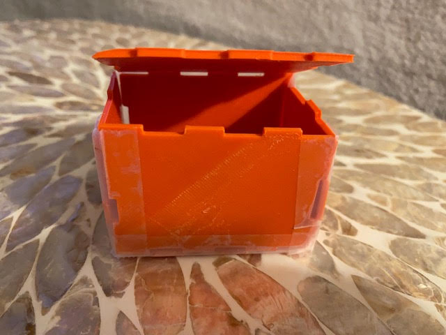

Courtenay's Assignment 4

For this project, my goal was to design a box made up of flat panels with fingerjoints. I 3D printed all of the box panels to design for an interference fit so that when the panels are pressed together, they join tightly and do not need additional fasteners or screws.
The challenge was to design a close enough fit that the resulting box could hold something like sugar without leaking.
With direct support from our wonderful teaching assistant, Junchao, I learned how to create a box model using Rhino. I admittedly had some challenges with visualizing how to design the panels using a joining method, and Junchao modeled this initial design to show how to use dogbones:


While looking around for more inspiration, I noticed this old-fashinoned coffee box with finger joints in the display case of a local coffee shop, and I decided to use it as a jumping off point for my own model:


As a next step, I did some sketching of a small, rectangular box joined by fingerjoints for a snug fit, similar to the coffee box:

Then I looked online for a digital version of a 3D box with similar fingerjoints that I could try to model in Rhino from scratch. I used this box for inspiration:
I started modeling my box panels in Rhino. The pictures below show the progression of my work, and once again, I had some Rhino help from Junchao:

Once I finalized modeling my pieces, I checked to make sure they were all closed polysurfaces, then layed them flat in the Top viewport in Rhino and exported each piece as an individual STL file at 0.1 mm tolerance.

I had some assitance setting up my print job on the Dremel 3D printer from Anne, one of the staff working in the lab. An avid maker herself with experience 3D printing, Anne suggested printing my orange PLA filament with the following printer settings:
Nozzle temp: 235 degrees Celsius
Bed temperature: 65 degrees Celsius
Before slicing, I pulled all of my individual STL files (1 per panel) into a single print job in the Dremel software. I included a "spare" end panel for my box, just in case I needed it. As luck would have it, my first print job was a success!
Joining my panels together at the fingerjoints didn't go as smoothly as I was hoping. The joints lined up, but the tabs that stuck out were a tiny bit too wide for the notches (maybe by .1 mm on nearly all corners). So that I could show the product of my work, I assembled the box panels together at their fingerjoints using scotch tape for adhesion:
At this stage, I discovered that all of my panels had printed with nice, crisp edges, but a couple of the panels appeared a bit warped, perhaps due to their thinly layered walls. I had made a decision to print the panels with relatively thin layers just for the sake of rapid prototyping.
If I were to print the box panels again, I would scale down by .1 mm all tabs around the perimeter of each panel. Also, to try to mitigate any panels from warping again I would increase the number of wall layers to increase thickness of the panels.

Finally I performed a "sugar test" to see if all of my panels fit tightly enough to hold sugar wihout leaking. Sadly, regular grain white sugar leaked through the gaps, but raw sugar passed the test, given that the grains of raw sugar are generally wider in diameter than the width of any of the gaps between panels of my box! Good lessons learned for the next project!